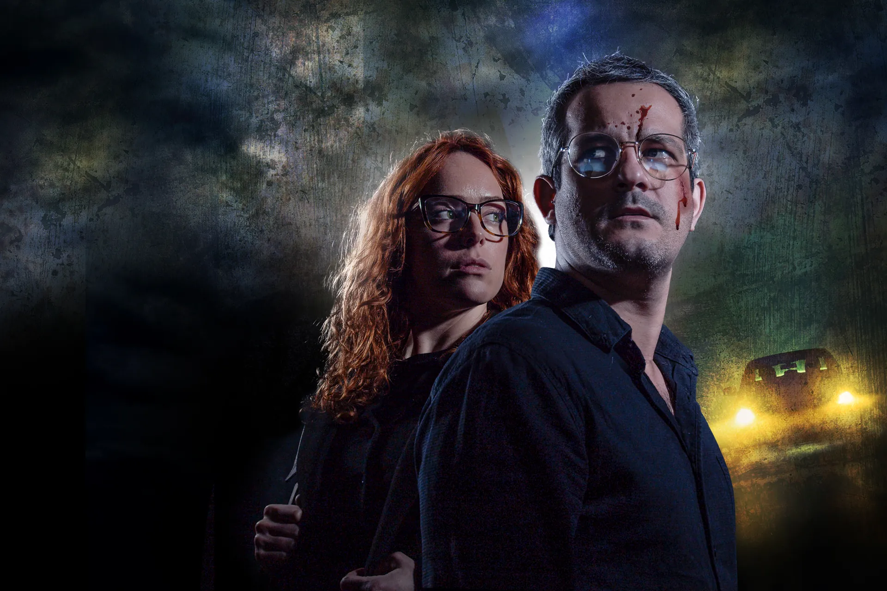
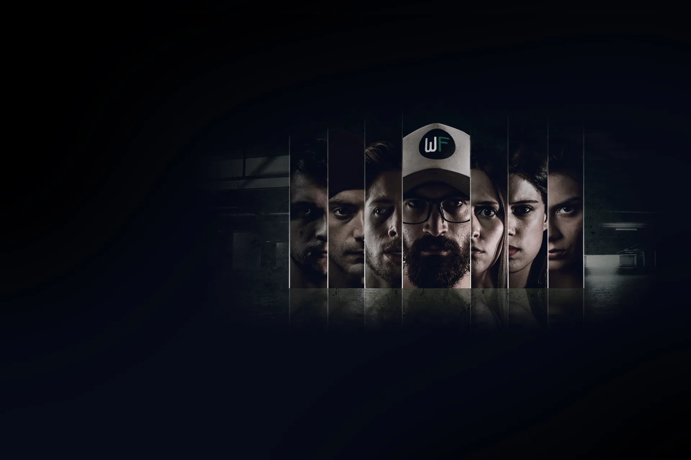
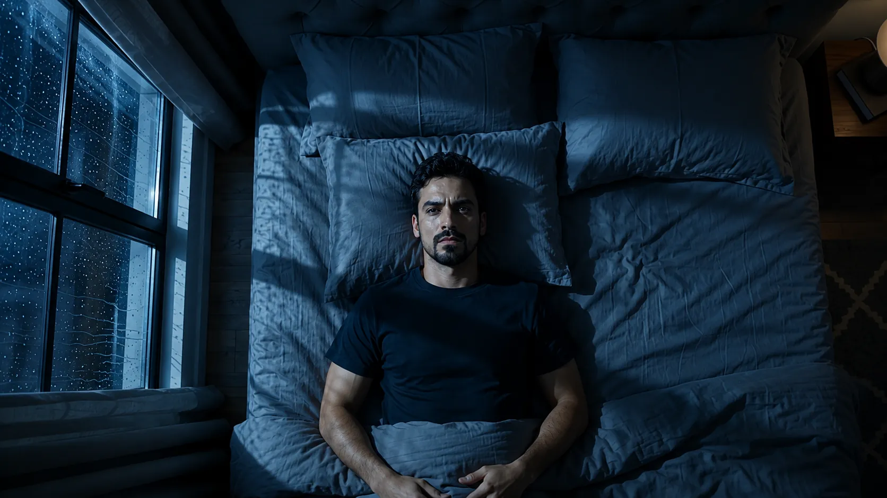
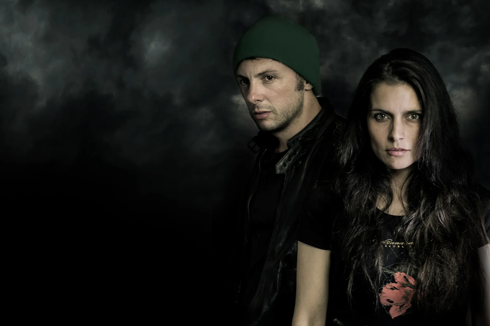
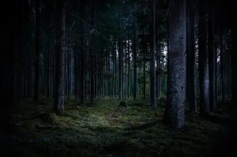
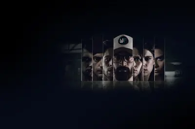
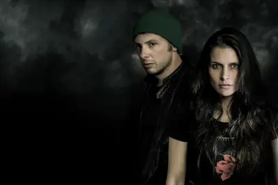

cortometraje |
|
|
Ignacio es incriminado con el delito de secuestro. Cada minuto que pasa se van agregando pruebas que hacen más difícil probar su inocencia y que podrían acabar con su vida tal cual la había vivido hasta ahora.
|
Reparto: Carlos Wedeles, Mika Larraguibel, Josefa Nef Videla & Jorge Torres.
Director: Pablo Tapia Suspenso 2025 / 16 min. |
Ignacio es incriminado con el delito de secuestro. Cada minuto que pasa se van agregando pruebas que hacen más difícil probar su inocencia y que podrían acabar con su vida.
Reparto: Carlos Wedeles, Mika Larraguibel, Josefa Nef Videla & Jorge Torres.
Director: Pablo Tapia
Suspenso 2025 / 16 min.

cortometraje |
|
| Un fatídico accidente dejó una huella imborrable en el padre de Emanuel. En el aniversario de la tragedia, padre e hijo deberán enfrentar juntos la culpa que han evitado por tanto tiempo. |
Reparto: En casting. Director: Pablo Tapia Suspenso 2026 / En Producción. |
mini serie |
|
 |
|
| Un informático desempleado y "voyerista" cuya conducta enfermiza lo lleva a presenciar algo que nunca debió ver. Y ahora, su vida corre peligro en manos de una oscura agrupación que no se detendrá hasta dar con su paradero. |
Reparto: Bastian Arriagada, Catalina Silva, Andrés Lamadrid & Jaime Artus. Director: Pablo Tapia Suspenso 2016 / 7 Episodios. |
 Episodio 1
Episodio 1
 Episodio 2
Episodio 2
 Episodio 3
Episodio 3
 Episodio 4
Episodio 4
 Episodio 5
Episodio 5
 Episodio 6
Episodio 6
 Episodio 7
Episodio 7

cortometraje |
|
| Un reconocido escritor de novelas afirma que, en sus sueños, voces del más allá intentan comunicarse con él. Al principio nadie le presta atención, pero con el paso del tiempo, su mundo cotidiano se transforma en una pesadilla donde la línea entre la realidad y lo sobrenatural se vuelve cada vez más difusa. |
Reparto: En casting. Director: Pablo Tapia Suspenso 2026 / En Producción. |

episodio piloto |
|
| Natalia, una abogada de la ciudad, despierta un día cualquiera siendo una perfecta desconocida para todo el mundo. Sus amigos y familia no la recuerdan, no importa lo que ella diga o haga, nadie es capaz de reconocerla. |
Reparto: Paola Pulgar, Alejandro Montes & Marcela Espinoza. Director: Pablo Tapia Suspenso 2015 / 22 min. |

● Live
🌡️ 21°C
💧 50%
⚡ 350W
🔋 80%
Rooms
⚙
🛏️
Bedroom
2 devices
›
🍽️
Kitchen
2 devices
›
🛋️
Living room
5 devices
›
🚿
Bathroom
1 device
›
Bedroom ▾
Robot vacuum cleaner
🤖
90% Filter status
10:00 AM Next Cleaning
75 m² Area cleaned
30 min Cleaning time
80% Battery charge
Living room ▾
💡
💡
Smart Lamp
1 device
☀
70%
Willy Fix
7 episodios



